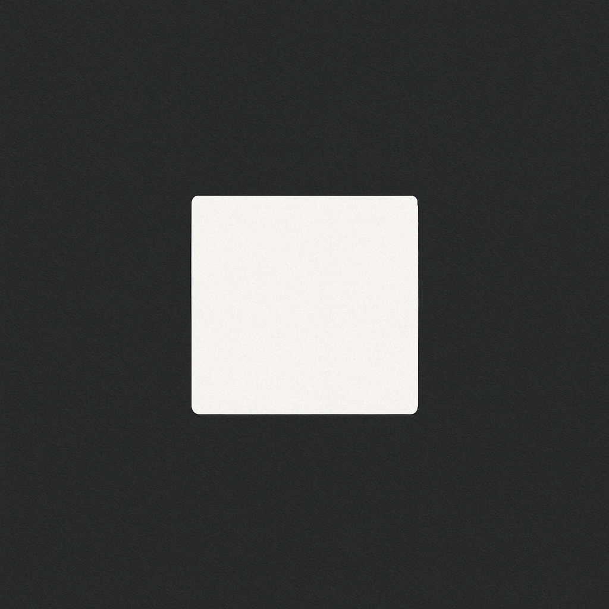

기적의 오토 밸런스
이너 리플렉터
이해의 바다 전, 또는 후에 약 5분 정도 하루를 돌아보세요.
너무 많은 생각은 필요하지 않습니다.
하루동안 경험했던 감정을 최대한 빠르게 훑어보는 느낌으로 적습니다.
중요한 것은 자신의 감정에 대해 ‘좋다, 싫다, 옳다, 그르다'는 판단을 내려놓고 알아차리는 것입니다.
이후, 30일의 데이터가 쌓이면 다이어리를 다시 읽어보며 자신의 감정을 점검해보세요.
그 속엔 반복된 감정 솔루션들이 있습니다.

날짜 로딩중...
대기